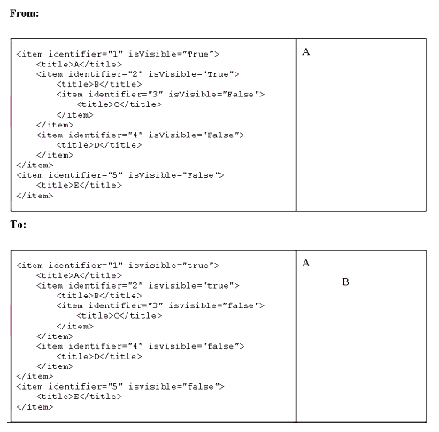

|
IMS Content Packaging Summary of
Changes
Version 1.1.4 Final Specification
|
Copyright © 2004 IMS Global Learning
Consortium, Inc. All Rights Reserved.
The IMS Logo is a registered trademark of IMS Global Learning
Consortium, Inc.
Document Name: IMS Content Packaging Summary of Changes
Revision: 04 October 2004
Date Issued:
|
04 October 2004
|
Latest version:
|
http://www.imsglobal.org/content/packaging/cpv1p1p4/imscp_sumcv1p1p4.html
|
Register comments or
implementations:
|
http://www.imsglobal.org/developers/ims/imsforum/categories.cfm?catid=5
|
|
IPR and Distribution Notices
Recipients of this document are requested to submit,
with
their comments, notification of any relevant patent claims or other
intellectual property rights of which they may be aware that might be
infringed by any implementation
of the specification set forth in this document, and to provide
supporting documentation.
IMS takes no position regarding the validity or scope of
any
intellectual property or other rights that might be claimed to pertain
to the implementation or use of the technology described in this
document or the extent to which any license under such rights might or
might not be available; neither does it represent that it has made any
effort to identify any such rights. Information on IMS's procedures
with respect to rights in IMS specifications can be found at the IMS
Intellectual Property Rights web page: http://www.imsglobal.org/ipr/imsipr_policyFinal.pdf.
Copyright © IMS Global Learning Consortium
2006. All
Rights Reserved.
If you wish to distribute this document or use this
document
to implement a product or service, you must complete a valid license
registration with IMS and receive an email from IMS granting the
license. To register, follow the instructions on the IMS website: http://www.imsglobal.org/specificationdownload.cfm.
This document may be copied and furnished to others by
Licensee organizations registered on the IMS website provided that the
above copyright notice and this paragraph are included on all such
copies. However, this document itself may not be modified in any way,
such as by removing the copyright notice or references to IMS, except
as needed for the purpose of developing IMS specifications, under the
auspices of a chartered IMS work group.
Use of this specification to develop products or
services is
governed by the license with IMS found on the IMS website: http://www.imsglobal.org/content/packaging/cpv1p1p4/cpv1p1p4speclicense.html.
The limited permissions granted above are perpetual and
will
not be revoked by IMS or its successors or assigns.
THIS SPECIFICATION IS BEING OFFERED WITHOUT ANY WARRANTY
WHATSOEVER, AND IN PARTICULAR, ANY WARRANTY OF NONINFRINGEMENT IS
EXPRESSLY DISCLAIMED. ANY USE OF THIS SPECIFICATION SHALL BE MADE
ENTIRELY AT THE IMPLEMENTER'S OWN RISK, AND NEITHER THE CONSORTIUM, NOR
ANY OF ITS MEMBERS OR SUBMITTERS, SHALL HAVE ANY LIABILITY WHATSOEVER
TO ANY IMPLEMENTER OR THIRD PARTY FOR ANY DAMAGES OF ANY NATURE
WHATSOEVER, DIRECTLY OR INDIRECTLY, ARISING FROM THE USE OF THIS
SPECIFICATION.
|
Table of Contents
1.
Introduction
1.1 Content Packaging
Overview
1.2 Scope and Context
1.3 Structure of this
Document
1.4 Nomenclature
1.5 References
2.
Amendments and Errata Instructions
2.1 Namespacing of 'xml:lang'
2.1.1
Reference to CP Issues List
2.1.2
Information Model Changes
2.1.3 XML
Binding Changes
2.1.4 Best
Practice Changes
2.2 Conflicting Information on
<organizations>
2.2.1
Reference to CP Issues List
2.2.2
Information Model Changes
2.2.3 XML
Binding Changes
2.2.4 Best
Practice Changes
2.3 Clarification on the Order of
Elements in a Manifest
2.3.1
Reference to CP Issues List
2.3.2
Information Model Changes
2.3.3 XML
Binding Changes
2.3.4 Best
Practice Changes
2.4 Typographic Correction in
Best Practice Guide
2.4.1
Reference to CP Issues List
2.4.2
Information Model Changes
2.4.3 XML
Binding Changes
2.4.4 Best
Practice Changes
2.5 Remove Reference to the
<variation> Element
2.5.1
Reference to CP Issues List
2.5.2
Information Model Changes
2.5.3 XML
Binding Changes
2.5.4 Best
Practice Changes
2.6 Correction for Online
Validation of the Examples
2.6.1
Reference to CP Issues List
2.6.2
Information Model Changes
2.6.3 XML
Binding Changes
2.6.4 Best
Practice Changes
2.7 Clarification on the Length
of the 'href' Attribute String
2.7.1
Reference to CP Issues List
2.7.2
Information Model Changes
2.7.3 XML
Binding Changes
2.7.4 Best
Practice Changes
2.8 Clarification on the Usage of
External Meta-data
2.8.1
Reference to CP Issues List
2.8.2
Information Model Changes
2.8.3 XML
Binding Changes
2.8.4 Best
Practice Changes
2.9 Scoping of Meta-data in a
Content Package
2.9.1
Reference to CP Issues List
2.9.2
Information Model Changes
2.9.3 XML
Binding Changes
2.9.4 Best
Practice Changes
2.10 Correction of the Parameter
Construction Algorithm
2.10.1
Reference to CP Issues List
2.10.2
Information Model Changes
2.10.3 XML
Binding Changes
2.10.4 Best
Practice Changes
2.11 Usage of Local and Remote
XSDs for Instance Validation
2.11.1
Reference to CP Issues List
2.11.2
Information Model Changes
2.11.3 XML
Binding Changes
2.11.4 Best
Practice Changes
2.12 The Usage of 'xml:base' in
Sub-manifests
2.12.1
Reference to CP Issues List
2.12.2
Information Model Changes
2.12.3 XML
Binding Changes
2.12.4 Best
Practice Changes
2.13 Improved Guidance on Merging
Sub-manifests
2.13.1
Reference to CP Issues List
2.13.2
Information Model Changes
2.13.3 XML
Binding Changes
2.13.4 Best
Practice Changes
2.14 Clarification on the Default
Attribute of the <organizations>
Element
2.14.1
Reference to CP Issues List
2.14.2
Information Model Changes
2.14.3 XML
Binding Changes
2.14.4 Best
Practice Changes
2.15 Sub-manifest Referencing
Using the <dependency> Element
2.15.1
Reference to CP Issues List
2.15.2
Information Model Changes
2.15.3 XML
Binding Changes
2.15.4 Best
Practice Changes
2.16 Correction of the Item
Element Multiplicity
2.16.1
Reference to CP Issues List
2.16.2
Information Model Changes
2.16.3 XML
Binding Changes
2.16.4 Best
Practice Changes
2.17 Declaring All Files in a
Package's Manifest
2.17.1
Reference to CP Issues List
2.17.2
Information Model Changes
2.17.3 XML
Binding Changes
2.17.4 Best
Practice Changes
2.18 Removing References to
Physical Files
2.18.1
Reference to CP Issues List
2.18.2
Information Model Changes
2.18.3 XML
Binding Changes
2.18.4 Best
Practice Changes
2.19 Miscellaneous Changes
2.19.1
Information Model
2.19.2 XML
Binding
2.19.3 Best
Practice Guide
3.
Deliverables
Appendix A - The Initial
Issues
About This Document
List of Contributors
Revision History
Index
1. Introduction
1.1 Content Packaging Overview
The IMS Content Packaging specification
describes data structures, XML binding and accompanying best
practices that are used to provide interoperability for Internet
based content with content creation tools, learning management
systems (LMS), and run time environments. The scope of the IMS
Content Packaging specification is focused on defining
interoperability between systems that wish to import, export,
aggregate, and disaggregate Packages of content.
At the current time it is version 1.1.3
of the Content Packaging specification that is available in the
Final Release form to the public. This was released in June 2003.
In March 2004 a further maintenance review cycle for Content
Packaging was started. This document describes the editorial
amendments and errata corrections for the creation of the v1.1.4
maintenance release.
1.2 Scope and Context
This document describes amendments that
should be made by adopters of the IMS Content Packaging
specification v1.1.3, thereby creating the IMS Content Packaging
v1.1.4 specification. Many typographical and elaborative changes
were made to clarify and correct the supporting documents. The
substantive differences between the v1.1.3 and the v1.1.4
specifications are limited to:
- Name-spacing of 'xml:lang' - ensure
that the 'xml:lang' attribute is used instead of the 'x:lang'
attribute and that the associated namespacing and schema location
is correctly identified in the XSD;
- Conflicting information on
<organizations> - confirm that the <organizations>
element must occur once in a manifest;
- Clarification on the order of elements
in a manifest - state that the XML Binding imposes the implied
order described in the Information Model;
- Typographic corrections in the best
practice document - editorial correction for one of the examples
demonstrating the usage of the 'isvisible' attribute;
- Removal of reference to the
<variation> element - ensure that there are no reference to
the <variation> element;
- Correction for online validation of the
examples - amend the examples to ensure that the online
validation works correctly;
- Clarification on the length for the
string contained in the 'href' attribute - clarify the
interaction of the 'href' and 'xml:base' attributes and the
consequence on the maximum length of the HRef created;
- Clarification on the usage of external
meta-data in Best Practice Guide - state that the support for
external meta-data requires the usage of an extension;
- Placing and scope of meta-data with a
content package - state that the aggregation etc. of the
different sets of meta-data within a content package is an
implementation independent feature;
- The normative parameter construction
algorithm is not complete - correction of the algorithm that uses
parameters to create an HRef;
- Clarification on the usage of local and
remote XSDs for instance validation - explain which XML control
files need to be placed in the root of the content package;
- Explain how 'xml:base' should be used
in sub-manifests - clarify the usage of the 'xml:base' attribute
with sub-mainfests;
- More guidance or requirements are
needed to explain sub-manifest merging process - provide guidance
on how sub-manifests can be merged;
- Clarification on the use of the default
attribute on the <organizations> element - state that the
default attribute must point to a direct child
<organization> in the manifest;
- Sub-manifest referencing using the
<dependency> element - state that this element cannot point
to something in a sub-manifest;
- Item element multiplicity is not the
same in the Information Model and Binding documents - ensure that
the <item> element multiplicity is consistently defined in
the Information Model and the XML Binding and XSD.
- Correcting the diagrams in the
Information Model and Best Practice that reference "physical
files".
1.3 Structure of this Document
The structure of this document is:
2. Amendments and
Errata Instructions
|
The resolution of the
issues that were not deferred until a later release. Each
instruction describes the changes to be made to the
documentation;
|
3. Deliverables
|
The set of documents
and supporting information that is released to form the IMS
Content Packaging v1.1.4 specification;
|
Appendix A - The
Initial Issues Presentation
|
The initial set of
issues that were introduced as a part of this revision of the IMS
Content Packaging specification.
|
1.4 Nomenclature
DTD
|
Document Type
Definition
|
LMS
|
Learning Management
System
|
PLIRI
|
Persistent Location
Independent Resource Identifier
|
URI
|
Universal Resource
Identifier
|
URL
|
Universal Resource
Locator
|
W3C
|
World Wide Web
Consortium
|
XML
|
Extensible Mark-up
Language
|
XSD
|
XML Schema Data
|
1.5 References
[CP, 03a]
|
IMS Content
Packaging Information Model v1.1.3, C.Smythe,
A.Cooper, IMS Global Learning Consortium, Inc., October
2004.
|
[CP, 03b]
|
IMS Content
Packaging XML Binding v1.1.3, C.Smythe,
A.Cooper, IMS Global Learning Consortium, Inc., October
2004.
|
[CP, 03c]
|
IMS Content
Packaging Best Practice Guide v1.1.3, C.Smythe,
A.Cooper, IMS Global Learning Consortium, Inc., October
2004.
|
2. Amendments and Errata
Instructions
2.1 Namespacing of 'xml:lang'
2.1.1 Reference to CP Issues List
| Identifier |
Issue |
CP113-24
|
Inconsistent
name-spacing using xml:lang and x:lang.
|
2.1.2 Information Model Changes
No changes required.
2.1.3 XML Binding Changes
Amendment
Instructions:
|
XSD file.
Ensure the schema declaration and import
line is
<xsd:schema targetNamespace="http://www.imsglobal.org/xsd/imscp_v1p1"
xmlns:xsd="http://www.w3.org/2001/XMLSchema"
xmlns:xsi="http://www.w3.org/2001/XMLSchema-instance"
xmlns="http://www.imsglobal.org/xsd/imscp_v1p1" elementFormDefault="qualified"
version="IMS CP 1.1.4">
<xsd:import namespace="http://www.w3.org/XML/1998/namespace"
schemaLocation="http://www.w3.org/2001/xml.xsd"/>
OR (for a local copy)
<xsd:import namespace="http://www.w3.org/XML/1998/namespace"
schemaLocation="xml.xsd"/>
The file xml.xsd must be a local copy of
the W3C file: http://www.w3c.org/2001/03/xml.xsd. This W3C
document is always updated.
|
2.1.4 Best Practice Changes
Amendment
Instructions:
|
Best Practice
Document.
Add the following paragraph to Section
5.1
The 'xml:' namespaced attributes are
defined in file 'http://www.w3.org/2001/xml.xsd'. This is the
reference to be used for on-line validation or a copy of this
file must be placed in the root of the content package for local
validation. Note that the file 'http://www.w3.org/2001/xml.xsd'
is always the most up to date version of the file
'http://www.w3.org/2001/03/xml.xsd' as maintained by W3C.
|
2.2 Conflicting Information on
<organizations>
2.2.1 Reference to CP Issues List
| Identifier |
Issue |
CP113-41
|
Conflicting
information describing the <organizations> element.
|
2.2.2 Information Model Changes
No changes required.
2.2.3 XML Binding Changes
Amendment
Instructions:
|
XML Binding
Document.
Change Section 3.1.2
From:
Description. Describes zero,
one, or more structures or organizations for this package.
Multiplicity. Occurs zero,
once, or more within a <manifest> element.
Attributes
- default (required). Identifies
the default organization to use. Data type = idref.
To:
Description. Describes zero,
one, or more structures or organizations
(i.e.<organization> elements) for this package.
Multiplicity. Occurs once
within a <manifest> element.
Attributes
- default (optional). Identifies
the default organization to use. Data type = idref.
|
2.2.4 Best Practice Changes
No changes required.
2.3 Clarification on the Order of
Elements in a Manifest
2.3.1 Reference to CP Issues List
| Identifier |
Issue |
CP113-47
|
Clarification on the
Order of Elements in a Manifest.
|
2.3.2 Information Model Changes
Amendment
Instructions:
|
Information
Document.
Change Section 4.1
From:
Notes: Additional
descriptive information about the element.
- In the table below, the
Manifest elements contained in the Content Packaging Information
Model are described using mixed case to enhance readability.
Implementers of this specification should refer to particular
binding specifications. For example, some XML bindings follow the
W3C convention of using lowercase for all elements;
- Elements surrounded by braces
({}) indicate areas in the Information Model where elements from
other information models or specifications are expected to be
included.
To:
Notes: Additional
descriptive information about the element.
- In the table below, the
Manifest elements contained in the Content Packaging Information
Model are described using mixed case to enhance readability.
Implementers of this specification should refer to particular
binding specifications. For example, some XML bindings follow the
W3C convention of using lowercase for all elements;
- Elements surrounded by braces
({}) indicate areas in the Information Model where elements from
other information models or specifications are expected to be
included;
- The order of elements
described in Table 4.1 is not significant from the perspective of
the information model. However, the corresponding XML binding
imposes this implied order as a requirement for IMS
manifests.
|
2.3.3 XML Binding Changes
No changes required.
2.3.4 Best Practice Changes
Amendment
Instructions:
|
Best Practice
Document.
Change Section 4.2
From:
A single <manifest> element is
required at the top of the IMS Manifest file. There can be one
and only one top-level <manifest> element. All other
instances of a <manifest> element are nested within the
<resources> element.
To:
A single <manifest> element is
required as the root element of the IMS Manifest file. There can
be one and only one top-level <manifest> element. All other
instances of a <manifest> element are nested within the
<manifest> element after the <resources> element. The
information model does not impose a particular ordering within
the <manifest> element however the corresponding XML
binding does impose the implied order of: <metadata>,
<organizations>, <resources> and
<manifest>.
|
2.4 Typographic Correction in Best
Practice Guide
2.4.1 Reference to CP Issues List
| Identifier |
Issue |
CP113-50
|
Typographic correction
in Best Practice Guide (Section 4.10).
|
2.4.2 Information Model Changes
No changes required.
2.4.3 XML Binding Changes
No changes required.
2.4.4 Best Practice Changes
Note: All
the examples need to change "isVIsible" to "isvisible" and "True"
and "False" to "true" and "false".
Amendment
Instructions:
|
Best Practice
Document.
Change the last example in Section
4.10

|
2.5 Remove Reference to the
<variation> Element
2.5.1 Reference to CP Issues List
| Identifier |
Issue |
CP113-52
|
Remove remaining
references to the <variation> element.
|
2.5.2 Information Model Changes
No changes required.
2.5.3 XML Binding Changes
Amendment
Instructions:
|
XML Binding
Document.
Change Section 3.4.1
From:
- 'type' (required). A
string that identifies the type of variant resource. This
specification defines the type webcontent plus reserved terms
that are used to denote the packaging of content defined by other
IMS specifications, including Learning Design.
To:
- 'type' (required). A
string that identifies the type of resource. This specification
defines the type webcontent plus reserved terms that are used to
denote the packaging of content defined by other IMS
specifications, including Learning Design.
|
Amendment
Instructions:
|
XML Binding Document.
Remove from the Index under the entry
for 'Elements':
variation 16
|
2.5.4 Best Practice Changes
Amendment
Instructions:
|
Best Practice Document.
Remove from the Index under the entry
for 'Elements':
variation 38
|
2.6 Correction for Online Validation of
the Examples
2.6.1 Reference to CP Issues List
| Identifier |
Issue |
CP113-54
|
Online validation of
examples doesn't work because the 'xsi:schemaLocation'
recommendation in the Best Practice document has not been
followed.
|
2.6.2 Information Model Changes
No changes required.
2.6.3 XML Binding Changes
Amendment
Instructions:
|
XML Examples.
Change the examples so that they
validate online using the code below: Note that each example must
have its own unique identifier.
<manifest xmlns = "http://www.imsglobal.org/xsd/imscp_v1p1"
xmlns:imsmd = "http://www.imsglobal.org/xsd/imsmd_v1p2"
xmlns:xsi = "http://www.w3.org/2001/10/XMLSchema-instance"
xsi:schemaLocation = "http://www.imsglobal.org/xsd/imscp_v1p1
http://www.imsglobal.org/xsd/imscp_v1p1p4.xsd
http://www.imsglobal.org/xsd/imsmd_v1p2
http://www.imsglobal.org/xsd/imsmd_v1p2p2.xsd "
identifier="Manifest1-CEC3D3-3201-DF8E-8F42-3CEED12F4197"
version="IMS CP 1.1.4">
|
2.6.4 Best Practice Changes
No changes required.
2.7 Clarification on the Length of the
'href' Attribute String
2.7.1 Reference to CP Issues List
| Identifier |
Issue |
CP113-69
|
Clarification on the
length for the string contained in the 'href' attribute.
|
2.7.2 Information Model Changes
No changes required.
2.7.3 XML Binding Changes
No changes required.
2.7.4 Best Practice Changes
Amendment
Instructions:
|
Best Practice Document.
Add as paragraph 2 in Section 4.8.3 "When the 'xml:base' attribute is used then
care must be taken not to exceed the length of any associated
'href'. The maximum length of both 'href' and 'xml:base' is
defined as 2000 octets. In cases where multiple 'xml:base' values
need to be concatenated to create the full path then care must be
taken to ensure that the total length does not exceed that of the
'href'. If the path length is greater than 2000 octets then the
system behavior is undefined."
|
2.8 Clarification on the Usage of
External Meta-data
2.8.1 Reference to CP Issues List
| Identifier |
Issue |
CP113-48
|
Clarification on the
usage of external meta-data in Best Practice Guide.
|
2.8.2 Information Model Changes
No changes required.
2.8.3 XML Binding Changes
No changes required.
2.8.4 Best Practice Changes
Amendment
Instructions:
|
Best Practice
Document.
Change Section 4.3.1
From:
"Some Content Packages will have their
associated meta-data captured in a separate file. When this is
the case, manifests may include an in-line reference to the
external meta-data file."
To:
A Content Packaging implementation may,
but doesn't need to, include an extension that references an
external meta-data file. This version of the Content Packaging
specification does not specify or recommend such a mechanism, but
future versions of the Content Packaging specification may
address the issue. An example of an in-line extension that refers
to an external meta-data file is demonstrated by the following
fragment:
<metadata>
<schema>ADL SCORM</schema>
<schemaversion>CAM 1.3</schemaversion>
<adlcp:location>Lesson01.xml</adlcp:location>
</metadata>
This example is taken from the ADL SCORM
2004 profile.
|
2.9 Scoping of Meta-data in a Content
Package
2.9.1 Reference to CP Issues List
| Identifier |
Issue |
CP113-89
|
Placing and scope of
meta-data with a content package.
|
Note:
There are dozens of places in all the documents where meta-data
is referenced. These have been updated in accordance with the
below statements.
2.9.2 Information Model Changes
No changes required.
2.9.3 XML Binding Changes
No changes required.
2.9.4 Best Practice Changes
Amendment
Instructions:
|
Best Practice
Document.
Change Section 4.3
From:
Meta-data is optional and is allowed
within <manifest>, <resource>, <organization>,
<item>, and <file> elements to more fully describe
the contents of a Package. Search engines may look into the
meta-data to find appropriate content for a learner or for
content repackaging. Copyright and other intellectual property
rights are easily declared within the meta-data. Authoring or
editing tools could then read the rights stipulated by a content
vendor to see if they have permission to open a resource file or
files and change the contents.
The complete set of meta-data elements
available for describing and cataloging a content Package is not
included with this specification. This specification recommends
the best practice of using the IMS Meta-Data v1.2.1 Specification
(the latest version), which contains approximately 86 meta-data
elements that may be used to describe and catalog Content
Packages, as the Package author sees fit.
To:
Meta-data is optional and is allowed in
various places in the manifest to more fully describe the
contents of a Package. Search engines may look into the meta-data
to find appropriate content for a learner or for content
repackaging. Copyright and other intellectual property rights are
easily declared within the meta-data. Authoring or editing tools
could then read the rights stipulated by a content vendor to see
if they have permission to open a resource file or files and
change the contents.
The IMS CP Information model defines
five places where meta-data can be used to describe different
components of a content package:
1. Manifest
2. Organization
3. Item
4. Resource
5. File
If there are requirements to describe
any or all of these components with meta-data, then each of these
respective components shall be described with separate instances
of Meta-data. This construct allows a fine grained description of
each component of a package.
Beware, however, that there is no
assumption of inheritance from one logical node to another. Each
component, if desired, is represented by its own meta-data
instance. If the meta-data associated with a resource X, for
example, identifies Jane Smith as the author, it does not follow
that file Y, a child node of resource X without meta-data, is
also authored by Jane Smith. In this case, if Jane needs to be
identified as the author of file Y, a separate meta-data instance
needs to be associated with file Y.
The complete set of meta-data elements
available for describing and cataloging a content Package is not
included with this specification. This specification recommends
the best practice of using the IEEE LOM standard (see IMS
Meta-Data v1.3 for best practices and guidelines in implementing
the IEEE LOM specification), which contains approximately 86
individual meta-data elements that may be used to describe and
catalog Content Packages, as the Package author sees fit.
|
2.10 Correction of the Parameter
Construction Algorithm
2.10.1 Reference to CP Issues List
| Identifier |
Issue |
CP113-53
|
The normative
parameter construction algorithm is not complete.
|
2.10.2 Information Model Changes
Amendment
Instructions:
|
Information Model
Document.
Change Section 4.2
From:
While first char of parameters is in"?&"
Clear first char of parameters
If first char of parameters is "#"
If the URI contains "#" or "?"
Discard parameters;
Done processing URI
If the URI contains "?"
Append "&" to the URI
Append parameters to the URI
To:
While first char of parameters is in"?&"
Clear first char of parameters
If first char of parameters is "#"
If the URI contains "#"
Discard parameters
Else
Append parameters to the URI
Done processing URI
If the URI contains "?"
Append "&" to the URI
Else
Append "?" to the URI
Append parameters to the URI
Done processing the URI
|
2.10.3 XML Binding Changes
No changes required.
2.10.4 Best Practice Changes
No changes required.
2.11 Usage of Local and Remote XSDs for
Instance Validation
2.11.1 Reference to CP Issues List
| Identifier |
Issue |
CP113-57
|
Clarification on the
usage of local and remote XSDs for instance validation.
|
2.11.2 Information Model Changes
Amendment
Instructions:
|
Information Model
Document.
Change Section 2.2
From:
Content distributed according to the IMS
Content Packaging specification must contain an IMS Manifest
file. To ensure that the IMS Manifest file can always be found
within a Package, it has a pre-defined name and
location:
imsmanifest.xml
The IMS Manifest file and any of its
supporting XML files (DTD, XSD) must be placed at the root of the
Package Interchange File or any other packaging image (like a
CD-ROM).
In the absence of this file, the package
is not an IMS Package and cannot be processed.
It is required that the name be kept, as above, in all lowercase
letters.
To:
Content distributed according to the IMS
Content Packaging specification must contain an IMS Manifest
file. To ensure that the IMS Manifest file can always be found
within a Package, it has a pre-defined name and
location:
imsmanifest.xml
In the absence of this file, the package
is not an IMS Package and cannot be processed.
It is required that the name be kept, as above, in all lowercase
letters.
The IMS Manifest file and any of its
directly referenced XML control files (DTD, XSD) must be placed
at the root of the Package Interchange File or any other
packaging image (like a CD-ROM). XML control files that are
indirectly referenced can be located as required by the namespace
and path names. The usage of remote or local validation files is
implementation dependent. However, if local files are used then
these must be identical to those online.
|
2.11.3 XML Binding Changes
No changes required.
2.11.4 Best Practice Changes
No changes required.
2.12 The Usage of 'xml:base' in
Sub-manifests
2.12.1 Reference to CP Issues List
| Identifier |
Issue |
CP113-58
|
How should 'xml:base'
be used in sub-manifests?
|
2.12.2 Information Model Changes
No changes required.
2.12.3 XML Binding Changes
No changes required.
2.12.4 Best Practice Changes
Amendment
Instructions:
|
Best Practice
Document.
Change Section 4.8.3
From:
xml:base is a construct used to
explicitly specify the base URI of a document in resolving
relative URIs in links to external files. In the imsmanifest.xml
file, internal and external references may be absolute or
relative. Relative addresses can be prefixed by an xml:base
attribute. The xml:base attribute allows both external and local
base addresses to be specified. Relative URLs, in the absence of
xml:base, are relative to the Package root (location of
imsmanifest.xml). In the presence of an xml:base path, relative
URLs are relative to the path specified in xml:base. When an
xml:base path is relative itself, the absolute path is then
resolved to the location of the containing document. That is, the
location of the imsmanifest.xml file in an importing system, when
it is read, supplies the missing absolute segment, per the rules
expressed in RFC 2396. In the presence of an xml:base path, which
references an external location, the relative URLs are relative
to that location. Absolute (external) URLs are considered to be
fully-specified without the provision of additional pathing.
To:
'xml:base' is a construct used to
explicitly specify the base URI of a document in resolving
relative URIs in links to external files. In the
'imsmanifest.xml' file, internal and external references may be
absolute or relative. Relative addresses can be prefixed by an
'xml:base' attribute. The 'xml:base' attribute allows both
external and local base addresses to be specified. Relative URLs,
in the absence of 'xml:base', are relative to the Package root
(location of 'imsmanifest.xml'). In the presence of an 'xml:base'
path, relative URLs are relative to the path specified in
'xml:base'. When an 'xml:base' path is relative itself, the
absolute path is then resolved to the location of the containing
document. That is, the location of the 'imsmanifest.xml' file in
an importing system, when it is read, supplies the missing
absolute segment, per the rules expressed in RFC 2396.
Relative 'xml:base' paths that are
declared in a sub-manifest are relative to the Package root. In
cases where a manifest with a declared 'xml:base' path contains a
sub-manifest, and the sub-manifest also declares an 'xml:base'
path, the multiple 'xml:base' paths should not be concatenated at
runtime. Instead, the URIs within such a sub-manifest are
relative to the declared xml:base of the sub-manifest only.
Implementors are, of course, free to construct a relative
sub-manifest 'xml:base' path by concatenation or any other means
at aggregation time.
In the presence of an xml:base path,
which references an external location, the relative URLs are
relative to that location. Absolute (external) URLs are
considered to be fully-specified without the provision of
additional pathing.
|
2.13 Improved Guidance on Merging
Sub-manifests
2.13.1 Reference to CP Issues List
| Identifier |
Issue |
CP113-59
|
More guidance or
requirements are needed to explain sub-manifest merging
process.
|
2.13.2 Information Model Changes
Amendment
Instructions:
|
Information Model
Document.
Change Section 4. 1
From:
If the (sub)Manifest includes an
<organization> that can be used bythe context in which the
content is used, the root node of thatorganization (i.e., the
<organization> element itself) shall merge with the
<item> that references the (sub)Manifest, if the
<item> becomes instantiated. If the same attribute is
specified for both the <item> and the <organization>,
but with different values, the value defined for the <item>
manifest shall override the value defined for the
<organization>.
The diagram in Figure 4.2 explains how
the content of a (sub)Manifestis virtually merged with the
content of a referencing manifest. The circles represent
<items> in an <organization> structure.
In Figure 4.2, the diagram explains how
the content of a (sub)Manifestis merged with an <item> that
has children of its own, and how the referencing <item>'s
children take precedence over those they merge with.
To:
If the sub-manifest includes an
organization, the root node of that organization (i.e., the
organization element itself) shall merge with the item that
references the sub-manifest. If the same attribute is specified
for both the item and the organization it references, but with
different values, the value defined for the referred organization
manifest shall override the value defined for the referring item.
That is, child attributes take precedence over parent attributes.
This behavior is expected of the rendering of the navigation
tree, but does not need to affect the XML of the manifest(s).
[insert a modified version of Figure
4.2]
The diagram in Figure 4.2 explains how
the content of a sub-manifest is merged with the content of a
referencing manifest in the rendering of a navigation tree. The
circles represent <items> in an <organization>
structure. In this example, the <organization> of the
sub-manifest does not have a title attribute.
[insert a modified version of Figure
4.3]
The diagram in Figure 4.3 shows an
example where the <organization> of the sub-manifest does
have a title attribute.
In Figure 4.4, the diagram explains how
the content of a sub-manifest is merged with an item that has
children of its own, and how the referencing item's children take
precedence over those they merge with. In this example, the
organization of the sub-manifest does not have a title
attribute.
[insert a new diagram as Figure 4.4]
|
2.13.3 XML Binding Changes
No changes required.
2.13.4 Best Practice Changes
No changes required.
2.14 Clarification on the Default
Attribute of the <organizations> Element
2.14.1 Reference to CP Issues List
| Identifier |
Issue |
CP113-60
|
Clarification on the
use of the default attribute on the <organizations>
element.
|
2.14.2 Information Model Changes
Amendment
Instructions:
|
Information Model
Document.
Change 'Notes' cell entry for row 1.5.1
('Default') in Table 4.1
From:
If not supplied, the first organization
element encountered is assumed to be the default.
To:
When used, this must point to a direct
child <organization> in the manifest i.e., it cannot point
to an <organization> in a sub-manifest. If not supplied,
the first organization element encountered is assumed to be the
default.
|
2.14.3 XML Binding Changes
No changes required.
2.14.4 Best Practice Changes
No changes required.
2.15 Sub-manifest Referencing Using the
<dependency> Element
2.15.1 Reference to CP Issues List
| Identifier |
Issue |
CP113-70
|
Sub-manifest
referencing using the <dependency> element.
|
2.15.2 Information Model Changes
Amendment
Instructions:
|
Information Model
Document.
Change 'Notes' cell entry for row
1.6.2.7.1 ('Dependency') in Table 4.1
From:
<blank>
To:
This identifierref cannot reference an
identifier in a sub-manifest.
|
2.15.3 XML Binding Changes
No changes required.
2.15.4 Best Practice Changes
No changes required.
2.16 Correction of the Item Element
Multiplicity
2.16.1 Reference to CP Issues List
| Identifier |
Issue |
CP113-158
|
Item element
multiplicity is not the same in the Info Model and Binding
documents.
|
2.16.2 Information Model Changes
No changes required.
2.16.3 XML Binding Changes
Amendment Instructions:
|
XML Binding
Document.
Change Figure 3.3
[insert a modified version of Figure
3.3]
|
Change Section 3.3.3
'Multiplicity' entry
From:
Multiplicity. Occurs zero
or more times within <organization> and zero or more times
within <item>.
To:
Multiplicity. Occurs one or
more times within <organization> and zero or more times
within <item>.
|
Amendment
Instructions:
|
XML Binding Document. Change the XSD so that the <item>
multiplicity in an <organization> is one or more times.
|
2.16.4 Best Practice Changes
No changes required.
2.17 Declaring All Files in a Package's
Manifest
2.17.1 Reference to CP Issues List
| Identifier |
Issue |
CP113-161
|
'Extra files' in a
Manifest.
|
2.17.2 Information Model Changes
No changes required
2.17.3 XML Binding Changes
No changes required.
2.17.4 Best Practice Changes
Amendment
Instructions:
|
Best Practice
Document
Change Section 4 "Conceptual Model
Discussion"
From:
Resource - The resources
described in the manifest are physical assets such as web pages,
media files, text files, assessment objects, or other pieces of
data in file form. Resources may also include assets that are
outside the Package but available through a URL, or collections
of resources described by (sub)Manifests. The combination of
resources is generally categorized as "content". Each resource
may be described in a <resource> element within a
manifest's XML. This element includes a list of all the assets
required to use the resource. The files included in the Package
are listed as <file> elements within such <resource>
elements."
To:
Resource - The
resources described in the manifest are physical assets such as
web pages, media files, text files, assessment objects, or other
pieces of data in file form. Resources may also include assets
that are outside the Package but available through a URL, or
collections of resources described by sub-manifests. The
combination of resources is generally categorized as "content".
Each resource may be described in a <resource> element
within a manifest's XML. This element includes a list of all the
assets required to use the resource. The files included in the
Package are listed as <file> elements within such
<resource> elements.
All files included in the package
should be declared and referenced in the manifest when
interchanging packages. Including files in a package that are not
mentioned in the manifest can lead to a wide range of problems
when the package is imported into, run or re-exported from a
receiving LMS or repository. This means, for example, that files
such as web page 'spacer gifs' need to be declared as
<file> elements within the web page's <resource>
element in the package's manifest.
|
2.18 Removing References to Physical
Files
2.18.1 Reference to CP Issues List
| Identifier |
Issue |
CP113-301
|
Fix the Info Model
basic diagram.
|
2.18.2 Information Model Changes
Amendment
Instructions:
|
Information Model
Document
Figure 3.1
Replace words "PHYSICAL FILES" with
"CONTENT"
[insert a modified version of Figure
3.1]
|
2.18.3 XML Binding Changes
No changes required.
2.18.4 Best Practice Changes
Amendment Instructions:
|
Best Practice
Document
Figure 3.1
Replace "PHYSICAL RESOURCES" with "CONTENT"
[insert a modified version of Figure
3.1]
|
Figure 3.2
Replace words "PHYSICAL FILES" with
"CONTENT"
[insert a modified version of Figure
3.2]
|
Figure 4.1
Replace words "PHYSICAL FILES" with
"CONTENT"
[insert a modified version of Figure
4.1]
|
2.19 Miscellaneous Changes
2.19.1 Information Model
The following changes were also made to
the Information Model document:
- Update the 'Front Page';
- Update the 'Table of Contents';
- Update the 'Introduction';
- Update the 'About This Document';
- Update the 'List of Contributors';
- Update the 'Revision History';
- Update the 'Index'.
2.19.2 XML Binding
The following changes were also made to
the XML Binding document:
- Update the 'Front Page';
- Update the 'Table of Contents';
- Update the 'Introduction';
- Update the 'About This Document';
- Update the 'List of Contributors';
- Update the 'Revision History';
- Update the 'Index'.
2.19.3 Best Practice Guide
The following changes were also made to
the Best Practice Guide document:
- Update the 'Front Page';
- Update the 'Table of Contents';
- Update the 'Introduction';
- Update the 'About This Document';
- Update the 'List of Contributors';
- Update the 'Revision History';
- Update the 'Index';
- Remove Appendix D;
- Add a new Appendix D that list the set
of outstanding issues to be addressed in later versions.
3. Deliverables
The set of deliverables to be issued as
the IMS Content Packaging v1.1.4 specification and documentation
set is:
- IMS Content Packaging: Summary of
Changes, Version 1.1.4 (this document);
- IMS Content Packaging Information
Model, Version 1.1.4;
- IMS Content Packaging XML Binding,
Version 1.1.4;
- IMS Content Packaging Best Practice and
Implementation Guide, Version 1.1.4;
- IMS Content Packaging v1.1.4 XSD;
- IMS Content Packaging v1.1.4 Examples
set.
Appendix A - The Initial Issues
In Table A1 is the list of original
issues that were reviewed as part of the maintenance process.
There are four possible states for the issue:
- Resolve - the resolution of this issue
has been addressed in this document;
- Reject - the issue has been considered
and rejected due to various reasons e.g. a wrongly identified
fault;
- Duplicate - this issue is a duplicate
of another in the list. An associated note identifies the other
entry;
- Defer - this issue can only be resolved
by the addition of new functionality or making changes that will
cause problems with backwards compatibility. These issues will be
considered as a part of a CP v1.2 development.
Table A1 List of issues
reviewed as part of the maintenance process.
| Issue
Identifier |
Review
Status |
Comment |
CP113-24
|
Resolved
|
Inconsistent
namespacing using 'xml:lang' and 'x:lang'.
Action: See sub-section 2.1
of this document.
|
CP113-25
|
Reject
|
Incorrect numbering of
elements in the Information Model tabular description.
Action: Resolved as part of the CP v1.1.3
maintenance.
|
CP113-41
|
Resolved
|
Conflicting
information describing the <organizations> element.
Action: See sub-section 2.2
of this document.
|
CP113-47
|
Resolved
|
Clarification on the
Order of Elements in a Manifest.
Action: See sub-section 2.3
of this document.
|
CP113-48
|
Resolved
|
Clarification on the
usage of external meta-data in Best Practice Guide.
Action: See sub-section 2.8
of this document.
|
CP113-49
|
Defer
|
Using URNs as
identifiers or use PLIDs instead of xs:ID.
Action: Resolve as part of CP v1.2.
|
CP113-50
|
Resolved
|
Typographic correction
in Best Practice Guide (Section 4.10).
Action: See sub-section 2.4
of this document.
|
CP113-51
|
Defer
|
Clarification on the
usage of the 'isvisible' attribute.
Action: Resolve as part of CP v1.2.
|
CP113-52
|
Resolved
|
Remove remaining
references to the <variation> element.
Action: See sub-section 2.5
of this document.
|
CP113-53
|
Resolved
|
Encoding parameters in
URLs and the normative parameter construction algorithm is not
complete.
Action: See sub-section 2.10
of this document.
|
CP113-54
|
Resolved
|
Online validation of
examples doesn't work because the 'xsi:schemaLocation'
recommendation in the Best Practice document has not been
followed.
Action: See sub-section 2.6
of this document.
|
CP113-57
|
Resolved
|
Clarification on the
usage of local and remote XSDs for instance validation.
Action: See sub-section 2.11
of this document.
|
CP113-58
|
Resolved
|
How should 'xml:base'
be used in sub-manifests?
Action: See sub-section 2.12
of this document.
|
CP113-59
|
Resolved
|
More guidance or
requirements are needed to explain sub-manifest merging
process.
Action: See sub-section 2.13
of this document.
|
CP113-60
|
Resolved
|
Clarification on the
use of the default attribute on the <organizations>
element.
Action: See sub-section 2.14
of this document.
|
CP113-69
|
Resolved
|
Clarification on the
length for the string contained in the 'href' attribute.
Action: See sub-section 2.7
of this document.
|
CP113-70
|
Resolved
|
Sub-manifest
referencing using the <dependency> element.
Action: See sub-section 2.15
of this document.
|
CP113-71
|
Duplicate
|
Action: This is a
duplicate of CP113-53 (see CP113-53 for the detailed
resolution.
|
CP113-89
|
Resolved
|
Placing and scope of
meta-data with a content package.
Action: See sub-section 2.9
of this document.
|
CP113-158
|
Resolved
|
Item element
multiplicity is not the same in the Info Model and Binding
documents.
Action: See sub-section 2.16
of this document.
|
About This Document
Title
|
IMS Content Packaging
Summary of Changes
|
Editors
|
Colin Smythe (IMS),
Alex Jackl (IMS), Wilbert Kraan (JISC)
|
Version
|
1.1.4
|
Version
Date
|
04 October 2004
|
Status
|
Final
Specification
|
Summary
|
This document presents
the amendments and errata corrections that are to be made to the
IMS Content Packaging v1.1.3 specifications to create the v1.1.4
release. The scope of these corrections is limited to editorial
changes and errata corrections. This document should be used in
conjunction with the IMS Content Packaging v1.1.4 specification
documents.
|
Revision
Information
|
04 October 2004
|
Purpose
|
This document has been
approved by the IMS Technical Board and is made available for
adoption.
|
Document
Location
|
http://www.imsglobal.org/content/packaging/cpv1p1p4/imscp_sumcv1p1p4.html
|
List of Contributors
The following individuals contributed to
the development of this document:
| Name |
Organization |
Kerry Blinco
|
DEST
|
Pierre Gorissen
|
SURF
|
Andy Heath
|
IMS Europe
|
Alex Jackl
|
IMS
|
Wilbert Kraan
|
JISC (CETIS)
|
GianLuca
Rolandelli
|
GIUNTI
|
Colin Smythe
|
IMS
|
Schawn Thropp
|
ADL
|
Raymond Yee
|
UC Berkeley
|
Revision History
| Version
No. |
Release
Date |
Comments |
Final 1.1.4
|
04 September 2004
|
The 'IMS Content
Packaging Summary of Changes' document that describes the
amendments and errata changes made to the IMS Content Packaging
v1.1.3 specification.
|
Index
A
Aggregation 1, 2
B
Best Practice Guide 1, 2, 3, 4, 5, 6, 7, 8, 9, 10, 11, 12, 13, 14, 15, 16, 17, 18, 19, 20, 21, 22, 23
Binding 1, 2, 3, 4, 5, 6, 7, 8, 9, 10, 11, 12, 13, 14, 15, 16, 17, 18, 19, 20, 21, 22, 23, 24
C
Catalog 1
Content Package 1, 2, 3, 4, 5
E
Extension 1, 2
I
IEEE 1
IMS Specifications
Content Packaging 1, 2, 3, 4, 5, 6, 7, 8, 9, 10, 11, 12, 13, 14, 15, 16, 17, 18, 19, 20, 21, 22, 23, 24, 25
Meta-Data 1
imsmanifest 1, 2
Information Model 1, 2, 3, 4, 5, 6, 7, 8, 9, 10, 11, 12, 13, 14, 15, 16, 17, 18, 19, 20, 21, 22, 23
Interoperability 1
isvisible 1, 2, 3
L
Learning 1
LMS 1, 2, 3
LOM 1
M
Manifest 1, 2, 3, 4, 5, 6, 7, 8, 9, 10, 11
Meta-data 1, 2, 3, 4, 5, 6
Language 1
Version 1
N
Namespace 1, 2
Namespacing 1
Normative 1, 2, 3
P
Package Interchange File 1
Profile 1
R
Resource 1, 2, 3
Resources 1, 2
RFC 1
run time environment 1
S
Schema 1, 2, 3
SCORM 1
Structure 1
sub-Manifest 1
U
URI 1, 2, 3
V
Validation 1, 2, 3, 4, 5
W
W3C 1, 2, 3
X
XML 1, 2, 3, 4, 5, 6, 7, 8, 9, 10, 11, 12, 13, 14, 15, 16, 17, 18, 19, 20, 21, 22, 23
XSD 1, 2, 3, 4, 5, 6
XML Schema
DTD 1
IMS Global Learning Consortium, Inc.
("IMS") is publishing the information contained in this IMS
Content Packaging Summary of Changes ("Specification") for
purposes of scientific, experimental, and scholarly collaboration
only.
IMS makes no warranty or representation regarding the accuracy or
completeness of the Specification.
This material is provided on an "As Is" and "As Available"
basis.
The Specification is at all times subject to change and revision
without notice.
It is your sole responsibility to evaluate the usefulness,
accuracy, and completeness of the Specification as it relates to
you.
IMS would appreciate receiving your comments and suggestions.
Please contact IMS through our website at http://www.imsglobal.org
Please refer to Document Name: IMS Content Packaging Summary
of Changes Revision: 04 October 2004